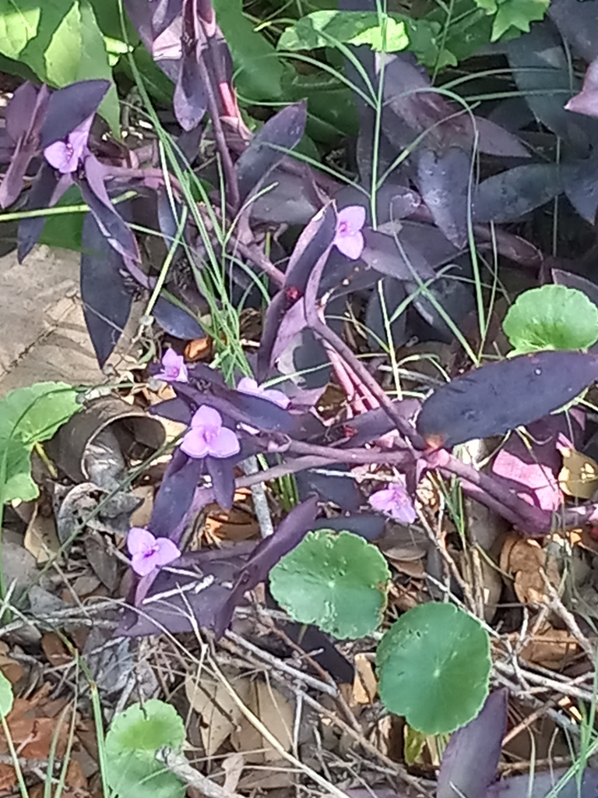

- The intense purple color of every part of the plant — stems, leaves, and flowers — is caused by anthocyanin pigments that protect it from UV radiation in its exposed native habitat: a built-in sunblock that deepens the more direct sun it receives. Studies have also shown Purple Heart to be an efficient filter of airborne VOCs and indoor pollutants.
- A groundcover that roots wherever stems touch moist soil, spreading steadily. Drought tolerant once established.
- The small pink-purple flowers are produced continuously but are minor relative to the foliage display.
- Contains compounds that may cause skin irritation in some people — wear gloves when working with large amounts.
- Grows as a groundcover in a few spots around the driveway, tucked between showier plants that take the spotlight. Does its job quietly.
Non-native. Native to Mexico. Member of Commelinaceae — the spiderwort family.
- Purple Heart is grown for one thing, and it delivers it relentlessly: color. Stems, leaves, and even the undersides are a deep, saturated purple, the result of heavy anthocyanin pigments that also help the plant cope with strong sun. Small three-petaled pink flowers appear at the stem tips, bright against the purple, mostly in the morning.
- It is a trailing, brittle-stemmed groundcover from Mexico that roots wherever a stem touches soil - which makes it both easy to propagate (a broken piece roots in water or dirt) and quick to spread. It takes heat, drought, and poor soil with ease, and the purple deepens in full sun. The sap can irritate sensitive skin, so gloves help when cutting it back in quantity.
- It is one of the most widely used foliage groundcovers in warm climates, valued for a color almost nothing else in the garden provides.
Modest wildlife value. The small pink flowers draw bees and hoverflies in the morning hours. The plant is grown mainly for foliage color rather than for wildlife, though its dense trailing mats give ground-level cover.
Small, three-petaled, pink to magenta, at the stem tips, opening in the morning.
Lance-shaped, fleshy, deep purple, clasping the jointed stems.
Low, trailing, brittle-stemmed groundcover that roots at the nodes.
A spreading mat of saturated purple stems and leaves topped by small pink flowers - the color is unmistakable. Stems snap easily and root where they land.
The sap can cause skin irritation and dermatitis in sensitive people — wear gloves when pruning large areas. It isn't edible.
For pets it may cause mild skin irritation and is generally low-toxicity, but avoid letting them eat it.


- © teschaim (CC-BY-NC), via iNaturalist
- © Randall Carter (CC-BY-NC), via iNaturalist